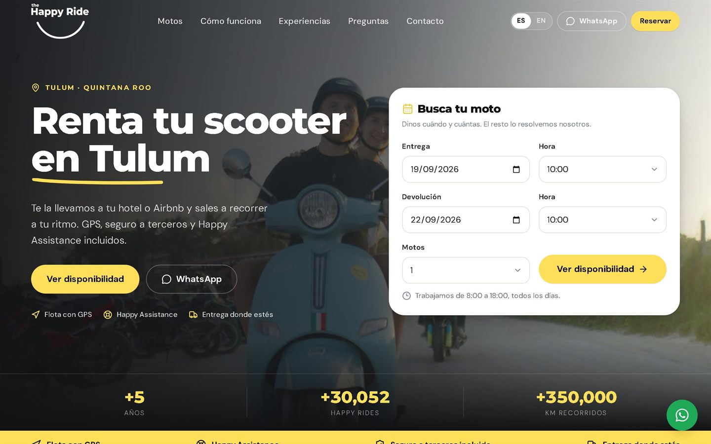
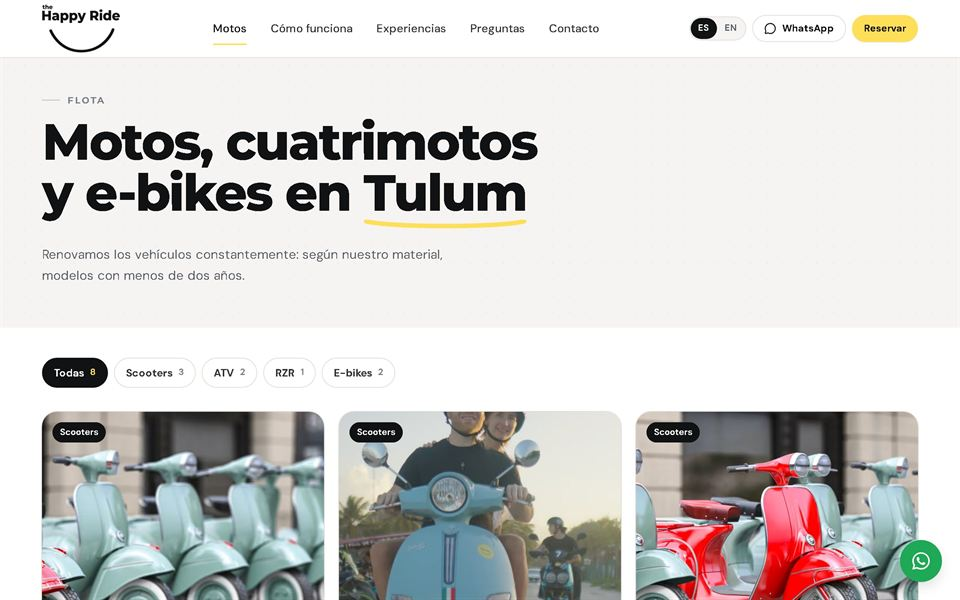
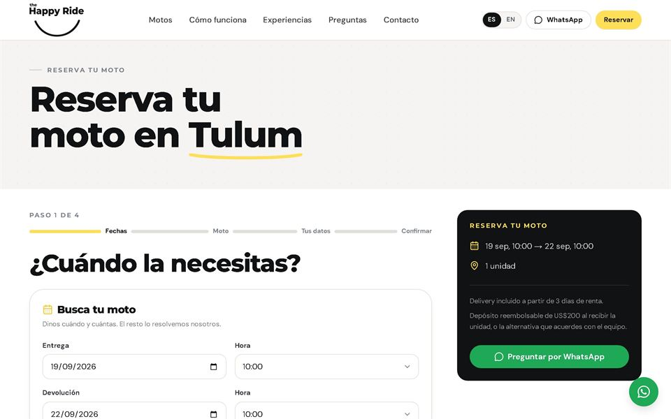
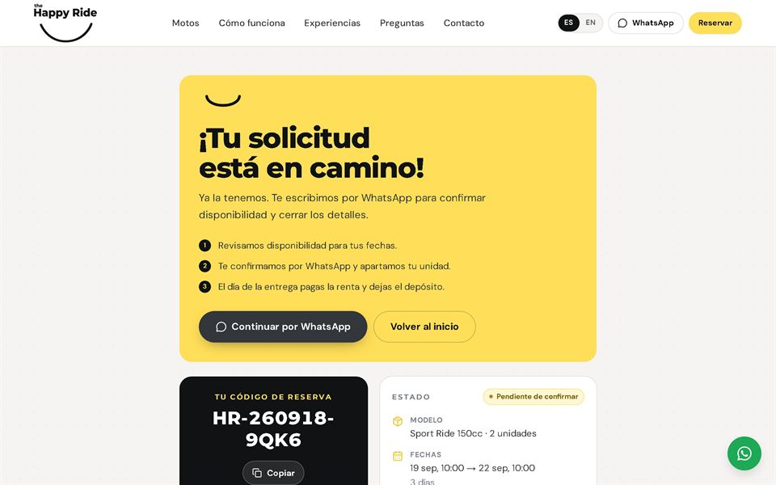
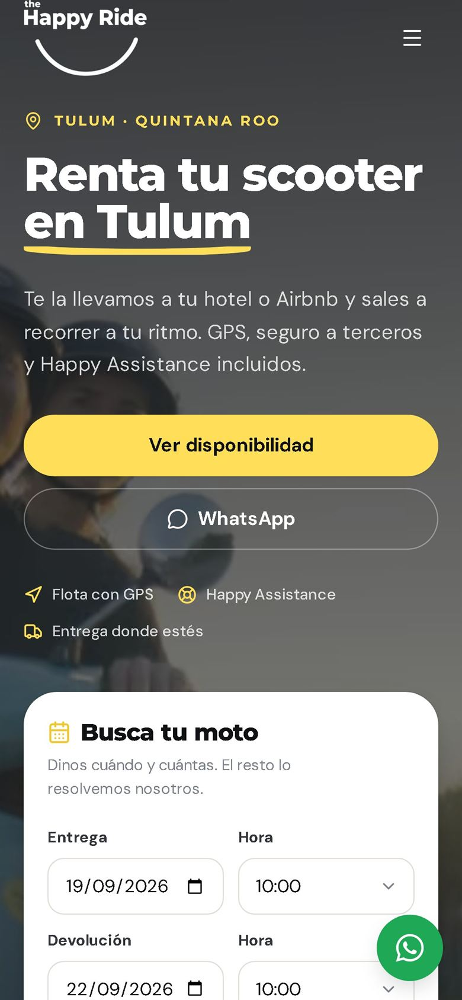

Bookings
The Happy Ride Tulum
Choose a vehicle and send a booking request, in a few steps.
View project
Bookings
The Happy Ride Tulum
A website in Spanish and English for browsing vehicles, choosing dates, and sending a booking request. The guest receives a tracking code, and the shop confirms by WhatsApp.
Watch the full walkthrough · Watch the admin · PDF presentation
- Vehicle catalog
- Booking requests
- Two languages



